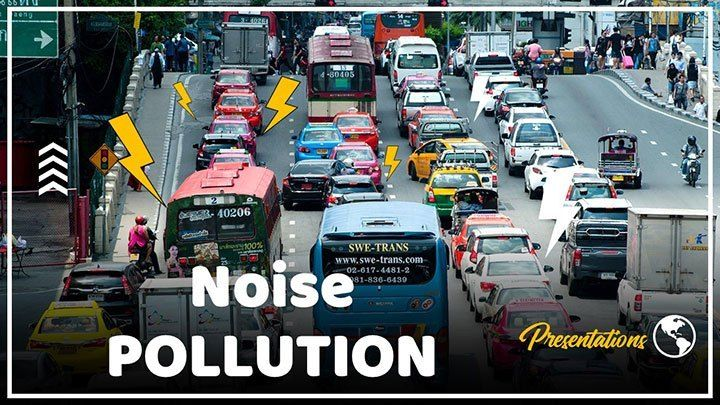
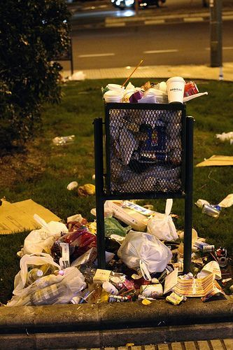
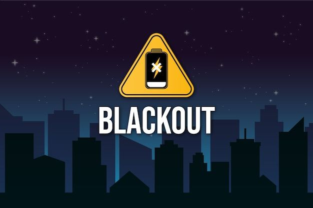

Welcome to KiliSmart!
Your go-to source for information about your neighborhood in Kilimani. Stay informed about key issues affecting our community, including water shortages, noise pollution, waste management, and power blackouts.
Water Shortages in Kilimani
Stay updated with the latest information and developments on water shortages in Kilimani. Understand the causes, ongoing solutions, and how these shortages impact our daily lives.
Noise Pollution in Kilimani
Learn about the sources of noise pollution in Kilimani, its effects on our community, and the measures being taken to mitigate its impact. Stay informed on how to address noise issues in your area.
Waste Management in Kilimani
Explore the waste management practices in Kilimani and find out how you can contribute to a cleaner, more sustainable neighborhood. Discover local recycling programs and waste reduction initiatives.
Power Blackouts in Kilimani
Get the latest updates on power blackouts affecting Kilimani and the efforts being made to restore power quickly. Stay informed about the causes of these blackouts and how they are being addressed by local authorities.